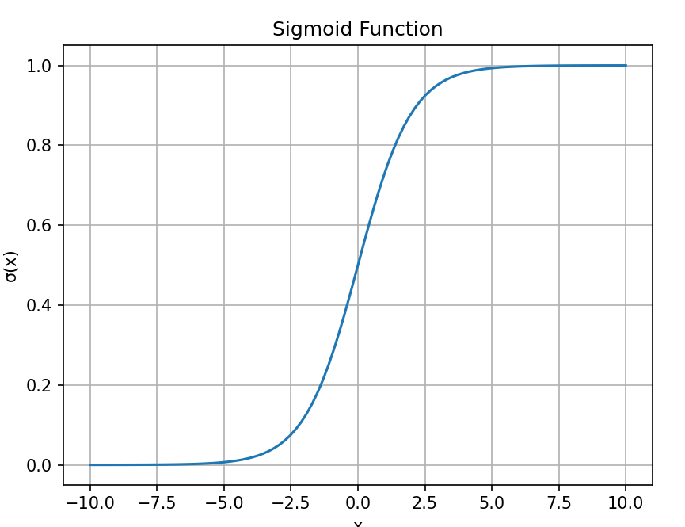

激活函数-Sigmoid
理解 Sigmoid 激活函数：公式、特点与应用
- 基本概念
- 代码调用
1 什么是Sigmoid？
一个形状像是躺平的S的平滑函数：
$$
\sigma(x) = \frac{1}{1 + e^{-x}}
$$
- 输出范围（0，1）
- 常用于将值映射为概率
1.1 常见场景（与Softmax对比）
🔍 Sigmoid vs Softmax：本质区别
| 特性 | Sigmoid | Softmax |
|---|---|---|
| 输出范围 | 每个神经元输出范围是 (0, 1) | 所有输出加起来为 1 |
| 激活方式 | 对每个输出神经元 单独 使用 Sigmoid | 对整组输出向量使用 Softmax |
| 标签之间的关系 | 互相独立，不排斥 | 互斥，只能属于一个类别 |
| 应用场景 | 多标签分类（multi-label classification） | 多类别分类（multi-class classification） |
| 损失函数 | Binary Cross Entropy | Categorical Cross Entropy |
| 输出解读 | 每个标签为“是/否”的概率 | 所有类别中选择概率最大的一个作为预测类别 |
Sigmoid会将每个标签的raw结果独立转化为概率，所以能得到多个标签的值。
BCE：多标签分类，常与Sigmoid一同使用，对每个标签独立做的二分类损失。nn.BCELoss() + Sigmoid()
CE: 多个类别中 只能选一个，常配合 Softmax 使用。Pytorch 中CE的包含了softmax
2 sigmoid的代码以及可视化
Numpy实现
1 | # 可选Python绘图代码示例（可在Jupyter中运行） |

Pytorch调用
1 | import torch |
3 多标签任务，但是使用softmax
或许大家在看代码的时候，一些多目标分割任务会看见代码使用softmax的情况。
但通常情况下，multi-label不是使用sigmoid么？
这里，结合各种资料和论坛[1]，将这么做的原因进行一个解析说明。
首先回顾一下两种激活函数的用途：
- Softmax是表示这个样本只有两种分类可能
- Sigmoid表示这个样本可能有多个标签
而在分割的情境下，就是这个像素，是否同时既属于类别1，又属于类别2。
如果是该像素可能属于多种目标类别，则使用sigmoid，反之使用softmax。